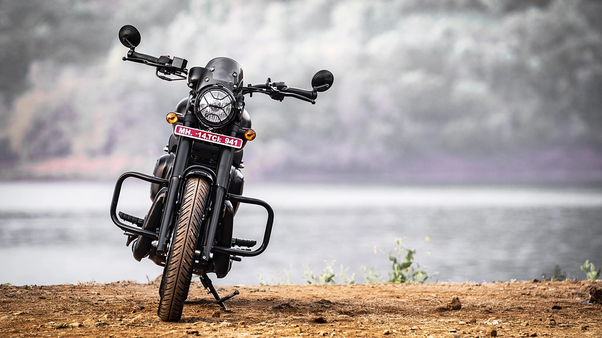

In the realm of vintage motorcycles, few names evoke the same sense of nostalgia and admiration as the Java bike. Hailing from the Czech Republic, the Java brand has carved a lasting legacy since its inception in the early 20th century. With its timeless design, robust engineering, and enduring appeal, the Java bike remains a symbol of craftsmanship and heritage cherished by enthusiasts worldwide.
What sets the Java bike apart is its timeless design, characterized by clean lines, elegant curves, and attention to detail. Whether it's the classic fuel tank shape, the signature chrome accents, or the distinctive twin exhaust pipes, every aspect of the Java bike exudes a sense of heritage and craftsmanship. Riding a Java bike is not just about getting from point A to point B; it's about embracing a lifestyle steeped in tradition and passion for motorcycling. The thumping sound of the engine, the responsive handling, and the wind in your face as you cruise down the open road evoke a sense of freedom and adventure that transcends time.